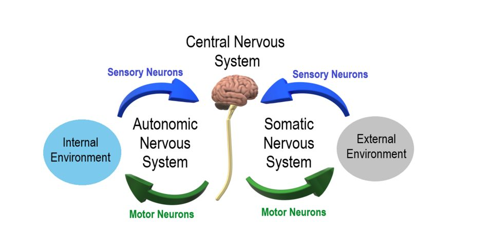

Qué son
El sistema nervioso periférico está formado por los nervios que salen del encéfalo (nervios craneales) y de la médula (nervios raquídeos) y se ramifican por todo el cuerpo. Un nervio es un haz de miles de axones agrupados en fascículos y envueltos por capas de tejido conectivo, con sus propios vasos sanguíneos.


Tipos de fibras
- Motoras: llevan las órdenes a los músculos.
- Sensitivas: de tacto, vibración y posición (fibras gruesas mielinizadas, rápidas) y de dolor y temperatura (fibras finas, lentas).
- Autónomas: controlan vasos, glándulas y órganos.
Por eso una neuropatía puede producir debilidad, acorchamiento, dolor o síntomas autónomos según las fibras que se afecten. Los nervios de brazos y piernas se forman a partir de redes llamadas plexos (braquial y lumbosacro).
Pueden regenerarse
A diferencia del cerebro y la médula, los axones periféricos pueden volver a crecer tras una lesión, alrededor de 1 mm al día, guiados por las células de Schwann. Por eso la recuperación de una lesión nerviosa puede tardar meses y depende de la distancia hasta el músculo.
Problemas frecuentes
Polineuropatía (diabetes, alcohol, B12), atrapamientos como el túnel carpiano o el del nervio cubital en el codo, radiculopatías, lesiones traumáticas y enfermedades inmunitarias como el Guillain-Barré.
Fuentes
- OpenStax. Anatomy and Physiology 2e: The peripheral nervous system.
- NINDS. Peripheral neuropathy.